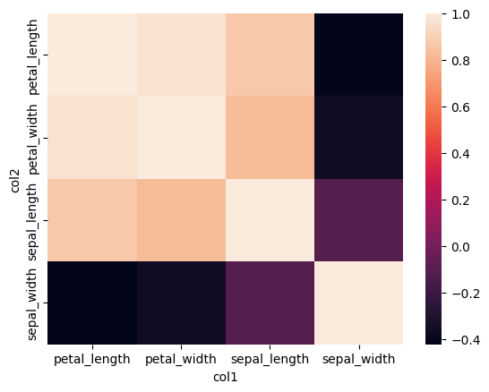

corr
Compute the pairwise correlation between numerical fields using one of Pearson, Kendall or Spearman methods.
For a selection of N numerical columns, the output will be a table containing all NxN pairwise comparisons.
For visualisation the output of the corr command can be fed into the heatmap command.
hatch corr <arguments>
Argument |
Description |
Reference |
|---|---|---|
|
display help for this command |
|
|
select columns to correlate pairwise (default: select all numerical columns) |
|
|
method for determining correlation (default: pearson) |
Simple example
Compute the correlation between sepal_width and sepal_length from the iris.csv data set:
hatch corr --columns sepal_length sepal_width < iris.csv
The output of the above command is a table with three columns: col1, col2 and corr, such that col1 and col2 show the names of the
input columns being correlated, and corr shows their numerical correlation value.
col1,col2,corr
sepal_length,sepal_length,1.0
sepal_width,sepal_length,-0.10936924995064931
sepal_length,sepal_width,-0.10936924995064931
sepal_width,sepal_width,1.0
In the above example we specify two columns for comparison and the output is a table with four data rows. This is because each column is compared pairwise with itself and with the other columns symmetrically.
Getting help
The full set of command line arguments for bar plots can be obtained with the -h or --help
arguments:
hatch corr -h
Selecting columns to correlate
-c [COLUMN ...], --columns [COLUMN ...]
But default, if no columns are specified explicitly, all numerical columns in the data set will be chosen for comparison.
For example, the following command performs pairise correlation on all numerical columns in the iris.csv file:
hatch corr < iris.csv
There are four numerical columns in iris.csv, so the output contains all 4x4 symmetric comparisons:
col1,col2,corr
sepal_length,sepal_length,1.0
sepal_width,sepal_length,-0.10936924995064931
petal_length,sepal_length,0.8717541573048716
petal_width,sepal_length,0.8179536333691642
sepal_length,sepal_width,-0.10936924995064931
sepal_width,sepal_width,1.0
petal_length,sepal_width,-0.4205160964011539
petal_width,sepal_width,-0.35654408961380507
sepal_length,petal_length,0.8717541573048716
sepal_width,petal_length,-0.4205160964011539
petal_length,petal_length,1.0
petal_width,petal_length,0.9627570970509662
sepal_length,petal_width,0.8179536333691642
sepal_width,petal_width,-0.35654408961380507
petal_length,petal_width,0.9627570970509662
petal_width,petal_width,1.0
Specific numerical columns can be specified for comparison using -c (or --columns).
For example, we can compare sepal_length with petal_length and petal_width like so:
hatch corr -c sepal_length petal_length petal_width < iris.csv
The output of the above command is shown below:
col1,col2,corr
sepal_length,sepal_length,1.0
petal_length,sepal_length,0.8717541573048716
petal_width,sepal_length,0.8179536333691642
sepal_length,petal_length,0.8717541573048716
petal_length,petal_length,1.0
petal_width,petal_length,0.9627570970509662
sepal_length,petal_width,0.8179536333691642
petal_length,petal_width,0.9627570970509662
petal_width,petal_width,1.0
Note
Non-numerical columns specified as arguments to -c (--columns) are ignored.
Correlation method
--method {pearson,kendall,spearman}
Pairwise correlation can be computed in one of three ways:
If no method is specified then pearson will be chosen by defualt.
The example below computes the pairwise correlation between sepal_width and sepal_length from the iris.csv data set using the spearman method:
hatch corr --columns sepal_length sepal_width --method spearman < iris.csv
The output of the above command is shown below. Note that the results are similar to, but slightly different from the outputs from the pearson method
shown in the simple example above.
col1,col2,corr
sepal_length,sepal_length,1.0
sepal_width,sepal_length,-0.15945651848582867
sepal_length,sepal_width,-0.15945651848582867
sepal_width,sepal_width,1.0
Plotting a heatmap of pairwise correlations
Conveniently, the output of the corr command can be easily plotted as a heatmap using command chaining, like so:
hatch corr + heatmap -x col1 -y col2 -v corr < iris.csv
In this example we compute the correlation of all four numerical columns in iris.csv and then feed the result of that command into the heatmap command
using command chaining.
The X and Y axes of the heatmap are set to the col1 and col2 output columns from corr, and the value shown in the heatmap cells is set to the corr column.
The output plot resulting from the above command is shown below:
{kind=link}